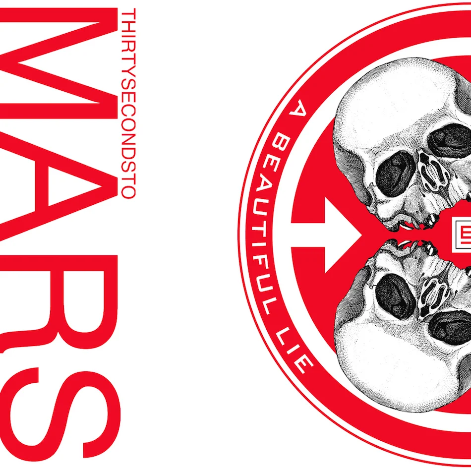
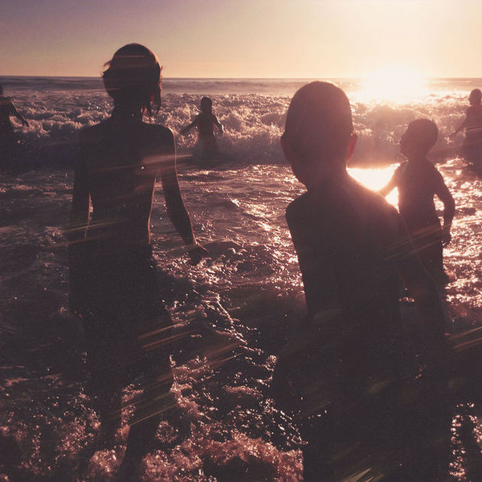
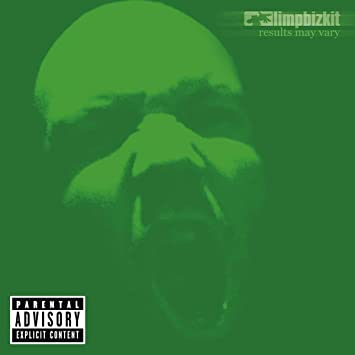
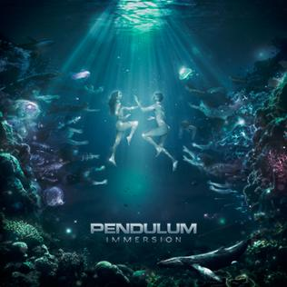
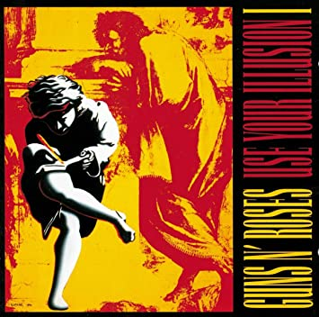
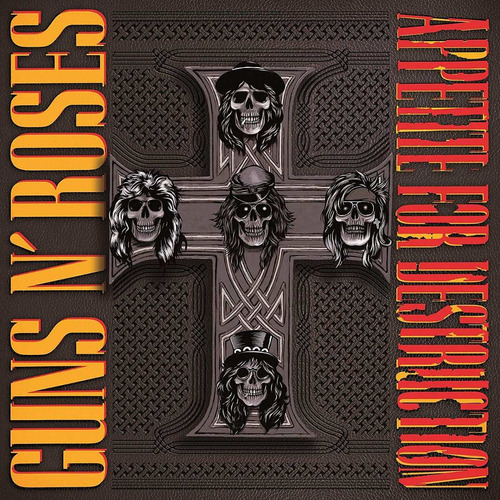
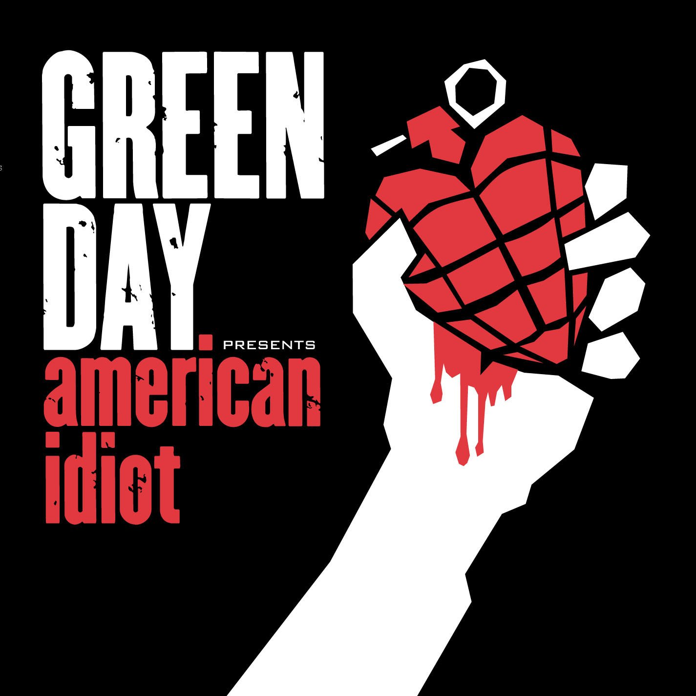
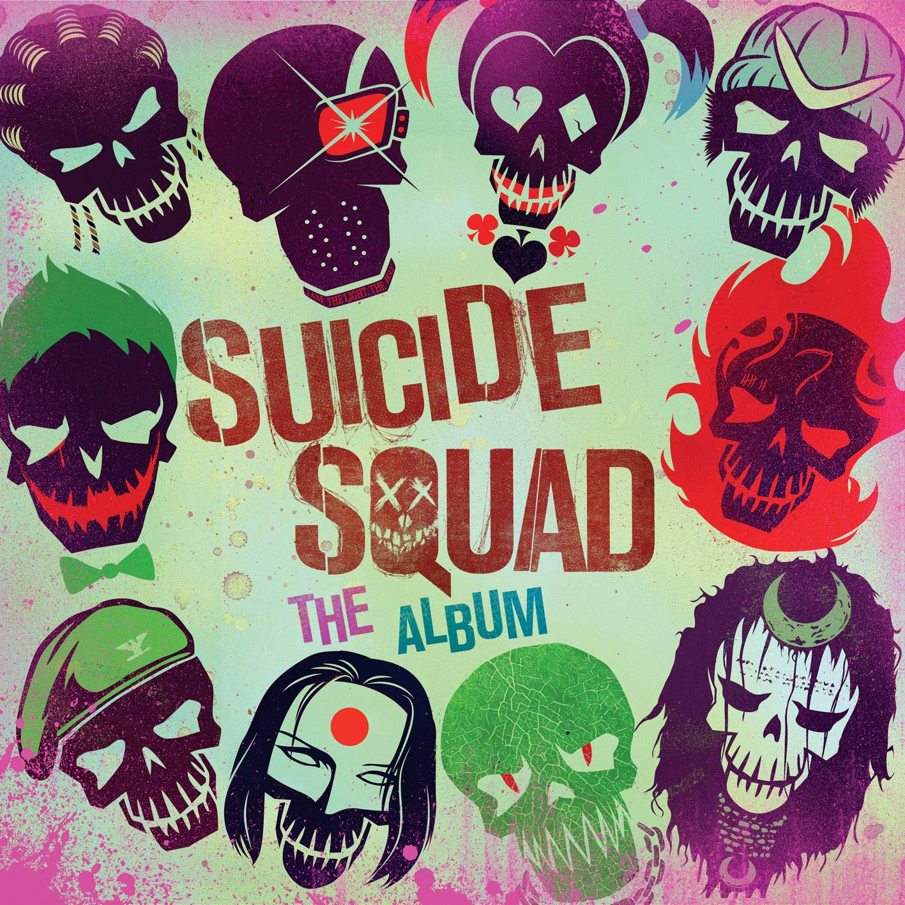
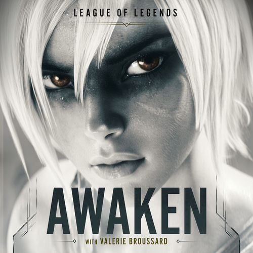

Canciones que te gustarán
From Yesterday
Thirty Seconds to Mars
2005

Papercut
Linkin Park
2000

Talking to Myself
Linkin Park
2017

Behind Blue Eyes
Limp Bizkit
2003

Witchcraft
Pendulum
2010

November Rain
Guns N' Roses
1991

Welcome to the Jungle
Guns N' Roses
1987

Jesus of Suburbia
Green Day
2004

Light that Never Comes
Linkin Park
2013

Purple Lamborghini
Skrillex
2016

Awaken
Valerie Broussard
2019

Smells Like Teen Spirit
Nirvana
1991